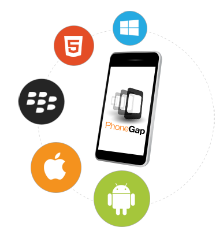
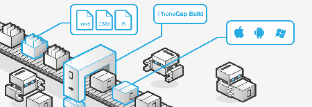

¿Qué es PhoneGap?

PhoneGap es un paquete de librerías que permite empaquetar aplicaciones HTML5 de manera que puedan ser usadas como apps para móviles o Web Apps. Te explicamos los detalles más relevantes sobre esta versátil solución que nos permitirá dar el salto fácilmente al desarrollo de aplicaciones multidispositivo, aunque no podemos olvidar que también tiene sus limitaciones.
PhoneGap es una solución de Adobe que nos permite llevar el desarrollo para la web al mundo de los dispositivos. Se basa en una “envoltura” que nos permite ejecutar aplicaciones desarrolladas con HTML, CSS y Javascript como si fueran aplicaciones nativas para los teléfonos móviles o tablets.
Joel Diaz - Abril 2018
Características

PhoneGap. PhoneGap es un framework para el desarrollo de aplicaciones nativas de sistemas operativos móviles, haciendo uso de tecnologías web como HTML5, CSS3 y JavaScript. Con PhoneGap es posible desarrollar aplicaciones para los siguientes sistemas operativos:
- Android
- iOS
- Windows Phone
- BlackBerry OS
- Web OS
- Symbiam
- Bada
Joel Diaz - Abril 2018
Historia

Inicialmente, fue desarrollado por Nitobi bajo licencias de software libre, pero para Octubre de 2011 Adobe anunció oficialmente la adquisición de Nitobi, pasando, así PhoneGap al control del gigante del software, gran interesado en la evolución de HTML5. Esto generó una gran incertidumbre entre los desarrolladores, pues el framework podía pasar a ser una tecnología propietaria, pero en una genial estrategia, Adobe donó PhoneGap a la fundación Apache, conservando de esta forma la integridad libre de PhoneGap.
En la actualidad, el proyecto en el sitio web de la fundación Apache esta nombrado como: "Apache Cordova", pero PhoneGap sigue siendo una especie de marca comercial, por lo que aún se sigue usando ese nombre para identificar al popular framework- Puedes encontrar más información de PhoneGap en la siguiente dirección www.phonegap.com, donde podrás descargar la última versión del framework que al escribir este artículo es la 1.7.0.
PhoneGap también es compatible con frameworks de desarrollo web móvil como jQuery Mobile, Sencha Touch, Dojo, jQTouch, SprountCore, GloveBox, XUI, iScroll, entre otros.
Joel Diaz - Abril 2018